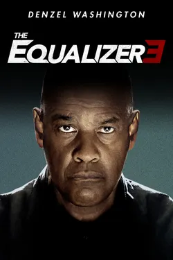

THE EQUALIZER 3
Directors:Antoine Fuqua
Actors:Denzel Washington, Andrea Scarduzio, Sonnia Ammar
Age Restriction:13
Duration:1h 49m
ABOUT
At a secluded winery in Sicily, Robert McCall (Denzel Washington) kills crime enforcer Lorenzo Vitale (Bruno Bilotta) and his henchmen to obtain a key to the winery's vault and recoup money stolen in a cyber-heist. While leaving the winery, Robert is shot in the back by Vitale's adolescent grandson.
MON-FRI
18h00pm - 19h49pm
SAT-SUN
13h00pm - 14h49pm
15h00pm - 16h49pm
17h00pm - 18h49pm
19h00pm - 20h49pm
21h00pm - 22h49pm